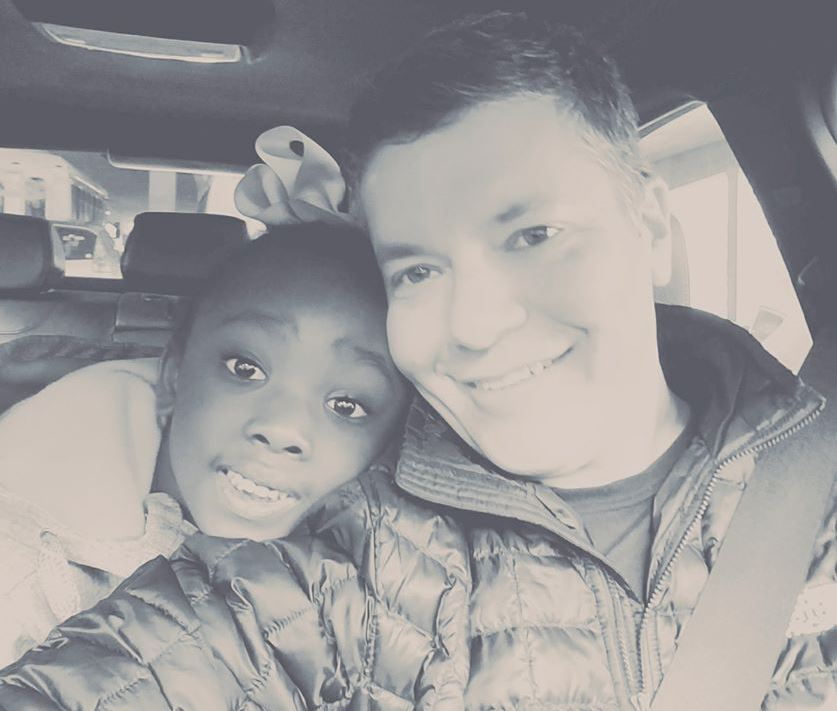

You've reached the portfolio of Robb Beal, a Veteran, Apple Design Award-Winning Product Design Leader.
Welcome, I've been expecting you!
In the below, I present a number of questions and their answers that will help you better understand me as a Designer and Design Leader. In many cases, the answers represent Case Studies of my work. This document supplements my LinkedIn profile and you'll find links back to LinkedIn for Case Studies that originated there.
Digital Product Design is my life's professional passion. If nothing else, I hope I leave that impression with you. And, regardless of whether I'm a professional fit for you at this moment, if you share that professional passion, please connect with me on LinkedIn.
Let's get to the Q&A!
Talk to Me About Design Leadership and How You Express It
Team. Design Leadership begins and ends with hiring and developing Design team skill. As a few recent examples of great hiring and skill development, consider:
I helped a Sr. Communications Designer (Liz) discover that in addition to her world-class visual skills that her impressive logical skills were perfectly suited to Product Design. I would go on to hire her at my next gig for precisely that role. And, there's no doubt in my mind that with her insane skill level and great personality, she will be a design leader in a major tech center within the next 1-2 years.
I taught Responsive Design concepts to a web designer (Sarah) who had yet to be exposed to them. And, in a major E-Commerce site redesign, I challenged her by setting a much higher standard of quality and thoroughness for our work. Unsolicited, she thanked me for pushing her to be great.
I mentored a Junior Designer (Johnny) whose skills were initially limited to product photo editing and light animation work, building skills around image optimization and web performance, programmatic content management (i.e, using tools to apply the logic of what marketing content is displayed where on a storefront), and a variety other new skills.
Leading and mentoring young designers is among the greatest joys I get from professional work and I hope and expect to play lifelong mentorship roles with the best of them.
Strategy. In terms of being Strategic within an organization, I concur with folks like Jeff Gothelf that UX Strategy is a component of Product Strategy.
With that in mind, below is a list of ways I'm strategic as a UX Design leader:
By designing new products/services
Through maturing my design team and its processes to higher performance states
Through maturing the strength of my team's collaboration with Engineering, Marketing, Product Management, Content Management, Analytics and other teams.
By maturing the practice of Prototyping
By maturing the practice of A/B-Multivariate testing
Through discovering and validating new tools that increase my design team's efficiency and happiness
Through asking/allowing my UX team members to think and act strategically
Tools. Tools are an important aspect of Design team productivity and I'm constantly scouting for new tools to take my teams to higher levels. A case in point is a couple of years ago, faced with an issue where our E-Commerce marketing spot styles often regressed because of CSS changes made at the application level by the engineering team, I sought out tools that would help the team get automated feedback when a visual regression happened. I discovered Applitools, a start-up out of Israel, had a tool that addressed our pain. I began evaluating it independently, then presented it to the team, and with their buy-in, trained a junior designer on its use.
As a Design Leader, referring to the scales in Peter Merholz and Kristin Skinner's recent book (graphic above), my biggest contributions are at the Big Picture and Strategy scales. I'll occasionally dip my toes into Structure scale considerations, but mostly in the role of Editor to my team member working full-time at that scale.
I call the work at these scales the "How It Works" part of design as a contrast to the "What it looks like" part of design.
Tell Me About the Time Your Work Really Moved Important Business Metrics
At Booksource in the Summer-Fall 2016, I lead the redesign of a Teacher- and Student-facing web app for managing the books in a Classroom Library. The app had seen slow-to-no growth over the past couple of years. In an incredibly short amount of time, I lead a brand new team through a product development cycle that put primary emphasis on improving the UX and secondary emphasis on adding new features.
The results of that small investment was a 30% YOY improvement (sustained for 6+ months) in Monthly Active Users. Additionally, by bringing key product recommendation content out onto the app's home page, pageviews for the app's E-Commerce page increased 1000%.
Show Me Some Innovative Product Thinking
First, I was the Founder and Head of Design of a start-up that did pioneering (pre-Facebook) Social Software, called Spring.
It was Social Software and Social Objects (People, Places, Products, Etc) before these terms were coined.
It was minimalist, content-centric UI long before that trend even began.
It dealt with how to provide personalization and sharing while respecting privacy.
There was even a Social Object standard that would remind you of the (Facebook) Open Graph protocol.
All of these thing were super-instinctual to me as I designed it.
Second, you know how Conversational UX is all the rage these days? I was prototyping Conversational UX as early as 2000. Here’s the summary from my LinkedIn post describing the prototyping. Note how I adapted the design to better support the imagined business model.
Circa 2000, I did personal prototyping of a verb-centric conversational UX that would serve as an alternative start page for web explorations. Imagine a UI in which a menu of common web actions like Buy, Sell, Trade, Rent/Lease, Subscribe, Reserve, Play, Join, Publish/Post, Contact (Email, Chat, Text, Call), Etc preceded the traditional Google search field and the choice in that menu informed all subsequent object auto-suggestions (and optionally inserted other forms of speech to make things feel more sentence-like).
The prototyping led me to the conclusion that, if the goal of a web start page (e.g., a search engine) is to ultimately get people to take actions on the sites it takes users to, actions/verbs should be higher-class UI citizens on those starting points.
With Spring, I innovated heavily with direct manipulation gestures. One prime example is Spring's Drag Between gesture where you connect, for example, a person to a place with a line between them and display a menu of actions that apply to the two things being connected.
Additionally, see below for 2 other examples of interaction design challenges I solved in designing Spring.
In the vast majority of my product work, I've lead the creation of the user research plans to support a given product development project. A primary responsibility here is choosing appropriate types and sequence of research methods to use given the type of product being developed and the expected time constaints.
A typical user research plan included 3 distinct rounds of research in ~1 months time. The 1st round typically would use Card Sorting, Reverse Card Sorting, and other attitudinal and qualitative research approaches to tease out what's important/valuable to users. Using the learnings from that 1st round, the 2nd round testing would often use Participatory Research approaches where we have users build hypothetical pages with semi-abstract content blocks. Wireframing based on that input would then serve as the design artifact for a final round of testing/feedback.
In all of my user research work, I placed a lot of emphasis on having the team create user test scenarios with enough complexity to really stress a given design. Giving users a variety of simple tasks will often tell you that even average designs support and satisfy a user completing simple tasks.
Finally, having Directed UX for an analytics product (at LucidEra), I'm expert at the use of quantitative analytics to instrument and watch/visualize the real-world behavior of users interacting with production (or possibly prototype) user experiences. I live to create funnel visualizations of important site experiences like checkout and signup and teach my team how to read and interpret them.
Tell Me About Yourself

I'm a Father to a perfect-in-every-way adopted 5 YO daughter, Clara and Husband to a professional executive, Tricia.
I learned the value of hard work and practice when, in college, I participated in a musical sport called Drum & Bugle Corps. Watch the video below (of Bluecoats, the Corps I marched in) for a sense of the skill and excellence needed to participate in this sport.
I've been fortunate to have traveled extensively throughout the world and those travels have helped me appreciate the importance of diversity. Countries include Turkey, China, South Africa, Croatia, Hungary, Argentina, Chile, Peru, Italy, France, Mexico, Belize, Bahamas
My eclectic interests and passions include: Kettle Bell Weight Training, Mozzarella, Reposado Tequilas, Giant Pumpkins, Residential Architecture, Interior Design